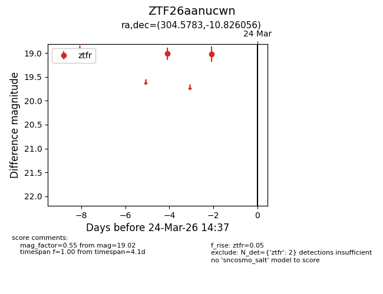
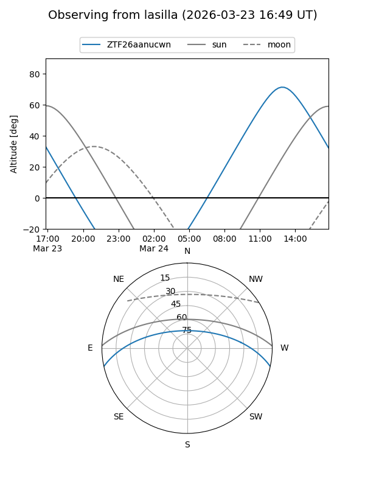
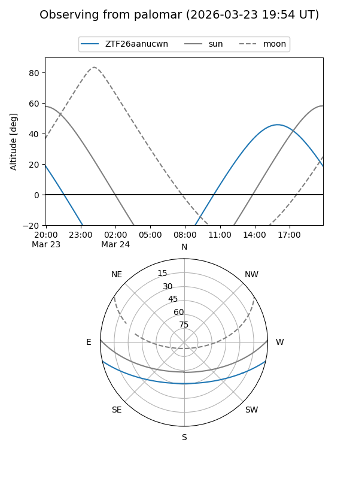

ZTF26aanucwn
Target ZTF26aanucwn at 2026-03-24 14:40
Aliases and brokers:
FINK: link
Lasair: link
ALeRCE: link
alt names
ZTF26aanucwn (ztf,fink_ztf)
Coordinates:
equatorial (ra, dec) = 304.5783,-10.82606
equatorial (HMS+DMS) = 20:18:18.80,-10:49:33.80
galactic (l, b) = (32.8421,-24.15003)
Flags:
Photometry:
last ztfr=19.02
2 ztfr detections
Lightcurve

Visibility


Additional plots